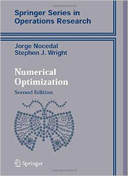
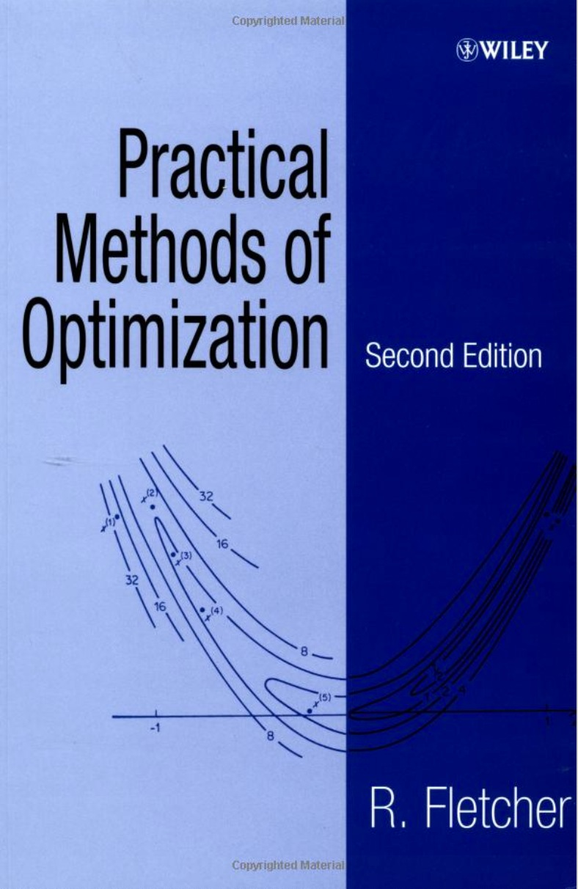
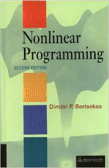

Books – Optimization
Nonlinear Multiobjective Optimization |
Multi-Objective Optimization Using Evolutionary Algorithms |
 |
Convex Optimization |
|  | Numerical Optimization (2nd Edition) |
|  | Practical Methods of Optimization (2nd Edition) |
|  | Nonlinear Programming |